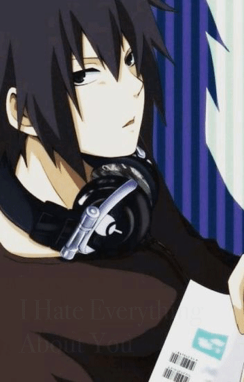

As the Naruto Series goes on, Sasuke goes through a complexed character development. Fans still consider him as a heartless and egotistical guy, but that isn't the case. Sasuke shows his caring and genuine feelings in the littlest ways. People fail to see him as the loyal and soft hearted man he turns out to be. (As much as it kills me to say it) Sasuke is confident in his wife, Sakura, as he says she isnt weak and nor stupid. Sakura is known to be the strongest and smartest kunoichi. With the surety of an "egotistical" character, he notes someone's worth even when he can come off cold. It goes for when Naruto's son, Boruto (which I thik was a good concept but they ruined the series), is determined to be Sasuke's apprentice. Sasuke neither accepts or rejects the idea rather he sees potential. Long story short, if you are a true fan, you will see the kind hearted man Sasuke really is.
If Sasuke became real(referring to his age in the Naruto Shippudden series), he would be known as emo. I was thinking the other day, what type of music he would listen too. I came up with Three Days Grace. I mean it has relatebale music and I just see him listening to it. 